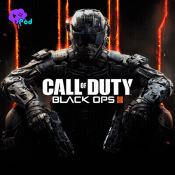
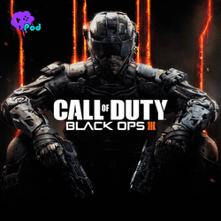

آخرین یادگاری الکترونیک آرتز در مجموعه فیفا، تجربهای است که باوجود داشتن برخی مشکلات همیشگی، میتواند اثر سرگرمکنندهای برای طرفداران باشد. همراه بررسی فیفا ۲۳ باشید.
اسم مجموعه بازی فوتبالی فیفا بیش از ۲۰ سال است که با شرکت الکترونیک آرتز گره خورده و به دیدن لوگوی این شرکت و عبارت معروف آن در ابتدای هر نسخه از آن عادت کردهایم. با این حال چندی پیش مشخص شد که قرارداد الکترونیک آرتز با فدراسیون جهانی فوتبال به پایان رسیده و تمدید هم نخواهد شد تا فیفا ۲۳، آخرین نسخهای از این مجموعه باشد که بهوسیله EA ساخته و منتشر میشود. از سال آینده این شرکت بازیهای خود را با نام EA Sports FC منتشر خواهد کرد و باید دید سرنوشت فیفا هم به چه شکلی خواهد بود. از زمان اعلام این خبر، EA گفت که قصد دارد آخرین بازی خود در این مجموعه یکی از بهترینِ آنها باشد که خب البته تقریبا هر سال شاهد وعده مشابهی از طرف آنها هستیم!
بی هیچ شک و تردیدی، آنچه که کیفیت یک بازی فوتبال را تعیین میکند، گیم پلی کلی آن و تجربهای است که از این ورزش در قالب یک بازی ویدیویی ارائه میدهد. مجموعه فیفا طی سالهای گذشته، همیشه فراز و نشیبهایی در این زمینه داشته و درگیر مسائلی مثل بیش از حد قدرتمند بودن برخی ویژگیها یا حتی برخی بازیکنان و همینطور مواردی مثل Dynamic Difficulty Adjusment یا همان DDA بوده که باعث میشود اینطور بهنظر برسد که گاهی بازی شانس بیشتری برای برنده شدن یکی از طرفین در حالتهای رقابتی قائل میشود. علاوه بر این، آپدیتهای مختلف هم همیشه در نسخههای قبلی تاثیرگذار بودند و گاهی مثلا نسخه اولیه بازی باوجود برخی باگها، در کل کیفیت مناسبی داشت ولی پس از انتشار چند آپدیت، روند آن به سمتی پیش میرفت که فرضا سرعت بازیکنان حرف اول را در بازی میزد. با این ذهنیت و دانستن این نکته که طبیعتا کیفیت گیم پلی فیفا ۲۳ هم در ادامه راه وابسته به آپدیتهای آن خواهد بود، در وضعیت فعلی بازی میتوان گفت که این نسخه، اصلا و ابدا تجربهای شدیدا متفاوت نیست؛ بلکه اگر نسخه قبلی را بازی کرده باشید، بهخاطر دارید که اواخر بازی، سازندگان آپدیتی بزرگ با محوریت تغییرات نسبتا زیاد از حیث گیمپلی برایش منتشر کردند که همان، سنگ بنای اصلی فیفا ۲۳ هم بهحساب میآید. با شروع اولین مسابقه در این نسخه، متوجه خواهید شد که سرعت کلی بازی، به شکلی محسوس پایین آمده و البته که این مورد، اصلا هم یک ایراد نیست؛ چرا که نتیجه آن، داشتن کنترل بیشتر روی بازی است و اجازه میدهد بتوانید آنچه را که در ذهن دارید، به شکلی مطلوبتر در بازی پیاده کنید. ریتم کلی بازی ضمن اینکه باعث شده تا فیفا ۲۳ شباهت بیشتری به فوتبال واقعی داشته باشد، هیجان کافی برای یک بازی ویدیویی را هم دارد و میتوان گفت که از این نظر شاهد وضعیت مناسبی هستیم.
نکته مهم بعدی، تقریبا بالانس بودن فیفا ۲۳ در وضعیت فعلی است؛ دلیل اینکه از تقریبا استفاده کردم، این است که هنوز هم گاهی در حالتهای رقابتی حس خواهید کرد که باوجود تلاش شما و برتریتان از هر نظر نسبت به حریف، انگار بازی علاقهای به اینکه شما برنده باشید ندارد و این یکی از مواردی است که همیشه در سالهای گذشته هم در فیفا شاهد بودیم. با این حال منظور از بالانس کلی، یعنی اینکه در فیفا ۲۳ کیفیت کلی عملکرد شما، وابسته به مولفههایی مثل سرعت بازیکنان نیست و مکانیک بیش از حد قدرتمندی هم نداریم که بتوان با سو استفاده از آن شانس برتری را افزایش داد. البته که این جنبه از بازی هنوز هم جای بهتر شدن دارد و مثلا در نسخه اولیه، شوتهای بیرونپا بیش از حد قوی بودند که پس از آپدیت بازی تاثیرگذاری آنها منطقیتر شده است. با این حال در کل در فیفا ۲۳، میتوان با روشهای مختلفی به گل رسید؛ بازیکنان فیزیکی و سرزن برای آنهایی که به ارسالها علاقه دارند بسیار کاربردی هستند؛ حتی اگر سرعت بالایی نداشته باشند و از طرف دیگر هنوز هم میتوان روی پاسهای کوتاه و نفوذ از عمق و حتی شوتهای از راه دور هم حساب باز کرد که مخصوصا این آخری، باعث شده تا بازیکنان کمتر به پایین آوردن عمق دفاع و جمع شدن در محوطه جریمه خودی علاقه نشان بدهند که در سالهای گذشته حسابی آزاردهنده میشد و رسیدن به گل را بسیار سخت میکرد. EA امسال برخی ویژگیهای جدید را هم به فیفا ۲۳ اضافه کرده است که روی روند کلی آن تاثیرگذار هستند. اولین مورد سیستم هایپرموشن ۲ است روی بهبود انیمیشنهای کلی حرکتی و ضربهها تمرکز دارد و انصافا هم شاهد جزییات روان و نرمتری از این حیث در بازی هستیم. با این حال گاهی هم برخی باگهای فیزیکی رخ میدهند که تعدادشان خیلی زیاد نیست. ویژگی مهم بعدی، سه شکل متفاوت دویدن یا بهطور دقیقتر شتاب اولیه بازیکنان در نسخههای نسل نهمی بازی است. در این زمینه شاهد حالتهای Explosive، Controlled و Lenghty هستیم که حالت اول، برای بازیکنان کوتاهقامت و دریبلزن است که میتواند در شروع دویدن شتاب بسیار بالایی داشته باشند، حالت سوم یا همان Lenghty برای بازیکنان فیزیکی و بلندقامت است که پس از شروعی نسبتا کند، میتوانند به سرعت بالایی برسند و حالت دوم هم حالت وسط این دو بهحساب میآید. این ویژگی از این حیث اهمیت دارد که باعث میشود حتی بازیکنانی که سرعت خیلی بالایی هم ندارند ولی از نظر فیزیکی قدرتمند هستند، بتوانند در کورسها به بازیکنان سریعتر برسند و در نتیجه میتوان از آنها هم به شکلی کاربردی در ترکیب تیمها استفاده کرد. در بخش آلتیمیت تیم میتوان با کمیستری استایلها هم نوع دویدن را برای برخی بازیکنان تغییر داد.
سازندگان همچنین امسال شوتهای جدیدی هم به بازی اضافه کردهاند. در کنار گزینههای همیشگی مثل ضربههای فینس، شاهد شوتهای قدرتی یا همان پاور شات هستیم که با زدن دکمههای مربوطه، با انیمیشنی کوتاه و زوم دوربین (این مورد را میتوان غیرفعال کرد) زده میشوند و نتیجه آنها، ضربهای بسیار محکم به توپ است. این شوتها پتانسیل این را که بتوانند بالانس بازی را بههم بزنند دارند ولی خب مکانیک آنها به شکلی تعریف شده که مانع از این مشکل میشود؛ از طرفی تاخیر چند ثانیهای در زدن این ضربهها به تیم مدافع کمک میکند که فرصت خوبی برای جلوگیری از آن داشته باشند و همچنین تنظیم جهت این شوتها هم بهمراتب سختتر از شوتهای دیگر است و در نتیجه کوچکترین اشتباهی باعث خواهد شد تا ضربه در چارچوب نباشد. این نکته، پاور شاتها را تبدیل به ضربههایی با ریسک بالا و در عین حال قدرت بالا کرده که اگر در زدن آنها به مهارت کافی برسید، میتوانید گلهایی زیبا بهثمر برسانید. به همین روال شوتهای بیرون پا هم امسال حسابی کارآمد هستند که البته اشاره کردیم که پس از آپدیت اول بازی، کمی ضعیفتر شدند تا تعادل بازی را خراب نکنند. در فیفا ۲۳ مکانیک پنالتی و ضربههای آزاد هم تغییر کرده و میتوان بهتر از آنها استفاده کرد. بهطور کلی و باوجود مسایلی که به آنها اشاره کردیم، فیفا ۲۳ از حیث تجربهای که از فوتبال ارائه میدهد، وضعیت مناسبی ارائه میدهد. بازی هم ریتم درستی دارد که نه بیش از حد سریع و اصطلاحا پینگپونگی است و نه آنقدر کُند که فاقد هیجان باشد. از طرف دیگر تنوع روشهای رسیدن به گل واقعا بالا است و با پشت سر گذاشتن چند مسابقه رقابتی با بازیکنان واقعی، متوجه خواهید شد که افراد مختلف به روشهای متفاوتی برای حمله و گلزنی برنامهریزی میکنند که همین موضوع، فیفا ۲۳ را بیش از پیش شبیه به فوتبال واقعی کرده و اجازه میدهد تا هر بازیکن، بسته به سبک بازی خودش و انتخاب مهرهها و تیمهایی که مناسب آن هستند، از بازی لذت ببرد.
نکته مهم بعدی در رابطه با فیفا ۲۳، حالتهای بازی است. بدون شک محبوبترین حالت آنلاین مجموعه فیفا طی سالهای گذشته، چیزی جز آلتیمیت تیم نیست و در نتیجه امسال هم EA تمرکز اصلی را برای تغییرات، روی آن گذاشته است. اولین تغییر مهم این بخش، تغییر کامل سیستم کمیستری است. امسال دیگر خبری از آن کمیستری مبتنی بر لینک خطی بین بازیکنان نیست و بازیکنان فارغ از اینکه در کدام پست باشند، بسته به اینکه بازیکنانی از ملیت، لیگ و باشگاه مشابه در ترکیب داشته باشید، باهم لینک میشوند. همین نکته باعث شده بود تا پیش از انتشار فیفا ۲۳، این ادعا را داشته باشیم که امسال میتوان تیمهایی با تنوع بالاتری از بازیکنان ساخت و در حالی که دیگر لزومی بر کنار هم بودن بازیکنان برای گرفتن لینک نیست، بتوان آزادیعمل زیادی از این حیث داشت. این اتفاق تا حدی هم رخ میدهد و مثلا شما میتوانید یک مهاجم از باشگاه لیورپول را با مدافعی از این باشگاه لینک کنید ولی خب در پسِ این ظاهر، سیستم جدید چالشهای جدیدی هم ایجاد میکند. برای مثال برای اینکه بازیکنان شما بیشترین کارایی ممکن و اصطلاحا بوست ناشی از کمیستری را داشته باشند، باید هر سه ستاره آنها که از طریق تعداد لینکهای ناشی از ملیت، لیگ و باشگاه مشابه پر میشوند، کامل شوند. رسیدن به این سطح برای همه بازیکنان، اصلا ساده نیست و در نتیجه در عمل مشاهده خواهید کرد که باز هم دستتان آنقدر برای ترکیب باز نیست و باید نهایت چند بازیکن را انتخاب و بقیه تیم را در راستای کامل شدن ستاره آنها بچینید. از طرف دیگر، امسال پُستهای هر بازیکن هم محدودتر از قبل شده و مثلا در حالی که سال گذشته میشد یک بازیکن در پست مهاجم (ST) را در پستهایی از CAM گرفته تا CM و CDM در ترکیب اولیه گذاشت و با این کار لینکها را کامل کرد، امسال تغییر پست بازیکنان وابسته به گزینههایی از پیش تعیینشده است و دیگر این آزادیعمل را نخواهید داشت؛ در نتیجه مثلا میتوانید برای یک بازیکن، فقط بین پستهای ST و LW سوییچ کنید. نکته مهم دیگر، تاثیر آیکانها در کمیستری کلی تیم است. در سالهای گذشته آیکانها از حیث کمیستری از این جهت مهم بودند که به تمام بازیکنان لینک میشدند و با بازیکنانی که ملیت مشابهی با آنها داشتند هم لینک سبز میدادند. امسال آیکانها فقط از جنبه ملیت لینک میشوند و تاثیر مثبتی روی سایر بازیکنان نخواهند داشت که خب کارایی آنها برای کمیستری کلی را کاهش میدهد. از طرف دیگر کارتهای هیرو از این حیث بهتر هستند؛ چرا که علاوه بر لینک احتمالی ملیت، چون لیگ مشخصی هم دارند به کمیستری کلی تمام بازیکنان دیگر از آن لیگ کمک میکنند.
هدف از توضیح این جزییات، رسیدن به این نکته است که سیستم جدید کمیستری برخلاف ظاهر اولیه، لزوما هم باعث راحتتر شدن کار بازیکنان در چینش تیم دلخواه نمیشود و مخصوصا بازیکنایی که قبلا سالها به سیستم قبلی عادت کرده بودند، مدتی زمان لازم خواهند داشت تا با سیستم جدید کنار بیایند. تغییر مهم بعدی در آلتیمیت تیم، اضافه شدن بخشی به نام مومنتس به بازی است که در آن، میتوانید با انجام دادن چالشهایی امتیاز کسب کنید و بعد با خرج این امتیازها، پک یا جوایز دیگری بهدست بیاورید. چالشهای این قسمت جالب طراحی شدهاند و مثلا باید در زمان محدودی از یک بازی فوتبال کار خاصی انجام دهید یا از طریق ضربه آزاد گل بزنید و مواردی از این دست. فعلا در فصل اول بازی هستیم و جوایز این بخش آنچنان هم ارزشمند نیستند ولی از آنجایی که امتیازهای کسبشده قابلانتقال به فصلهای بعدی هستند، میتوان آنها را به امید جوایز بهتر در آینده نگه داشت. سایر حالتهای بخش آلتیمیت تیم مثل دیویژن رایولز، چمپیونز و اسکواد بتل به روال سابق حضور دارند و تغییرات خاصی هم نداشتهاند. همچنین کماکان تاثیر پول واقعی در این بخش واقعا بالا است و با اینکه گیمپلی کلی مهارتمحورتر شده، ولی هنوز هم داشتن تیمی قدرتمند کمک زیادی به بازیکنان برای برتری میکند. از آلتیمیت تیم که بگذریم، بخشهایی مثل ولتا یا پرو کلاب تغییرات زیادی نسبت به قبل نداشتهاند و افرادی که در نسخههای قبلی طرفدار این بخشها بودند، امسال هم میتوانند با آنها سرگرم شوند. بخش کریر بازی تفاوتهایی نسبت به قبل کرده و مثلا میتوان با مربیهای واقعی در این بخش مشغول به بازی شد. منوهای این قسمت تغییر داشتهاند و آزادیعمل بیشتری به بازیکن برای کنترل باشگاه یا بازیکن خودشان میدهند. همچنین در بخش کریر شاهد ویژگی هایلایت هستیم که روشی جدید برای تجربه بازیها است و اجازه میدهد بدون تجربه مسابقه کامل یا صرفا شبیهسازی آن، در موقعیتهای حساس خودتان کار را به دست بگیرید و شانس گلزنی یا دفاع را افزایش دهید. این ویژگی هم ایده خوبی است که اجازه میدهد بدون نیاز به صرف زمان زیاد، بتوان از بخش کریر لذت برد.
تغییرات صوتی و بصری فیفا ۲۳ نسبت به نسخه قبلی، خیلی چشمگیر و فوقالعاده نیست ولی پیشرفتهای جزئی باعث شده تا مثل سالهای گذشته، EA فوتبال را در کل به شکلی جذاب از حیث بصری و صوتی ارائه دهد. برای مثال کیفیت چمن ورزشگاهها افزایش پیدا کرده و جزییات مربوط به تماشاگرها هم کمی بیشتر شده و نسبتا کمتر شاهد چهرههای تکراری در بین آنها هستیم. تنوع انیمیشنهای مربوط به شروع بازیها بسته به لیگها و همینطور رقابتهای مختلف و جزییات مناسب چهره مخصوصا بازیکنان مشهور هم از دیگر نکات حائز اهمیت بازی از حیث گرافیکی هستند. فیفا امسال لایسنس لیگهایی مثل ژاپن را از دست داده و برخی تیمهای مثلا سری آ هم بدون اسم رسمی در بازی هستند ولی در کل تنوع تیمها و لیگها آنقدر بالا است که ضعفی از این نظر حس نمیشود. فیفا ۲۳ همچنین از قابلیت کراس پلی هم پشتیبانی میکند که البته محدودیتهایی دارد و مثلا حالت پرو کلاب از این ویژگی پشتیبانی نمیکند. فیفا ۲۳ در مجموع بهعنوان آخرین نسخه این مجموعه قدیمی از EA، اثری با تغییرات گسترده نیست و سازندهها سعی کردهاند روی نقاط قوت نسخه قبلی متمرکز شوند و با تغییراتی جزئی، تجربه مناسبی از یک بازی فوتبال ارائه دهند؛ اتفاقی که تا حد قابلقبولی هم رخ داده و با اینکه هنوز هم ضعفهایی همیشگی را میتوان در بازی مشاهده کرد که در خلال متن به آنها اشاره کردیم، ولی خودِ فوتبالی که بازی ارائه میدهد، حداقل در وضعیت فعلی آن اوضاع مناسبی دارد و میتوان از آن لذت خوبی برد. بهزودی قرار است آپدیت رایگان جام جهانی ۲۰۲۲ هم برای بازی منتشر شود و باید دید که فیفا ۲۳ در ادامه مسیر چقدر از حیث محتوا موفق خواهد بود. اگر طرفدار ورزش فوتبال و مخصوصا مجموعه فیفا هستید، فیفا ۲۳ اثر مناسبی برای تجربه است تا ببینیم که از سال آینده، سرنوشت بازیهای فوتبال به چه شکل خواهد بود.


 



نظرات